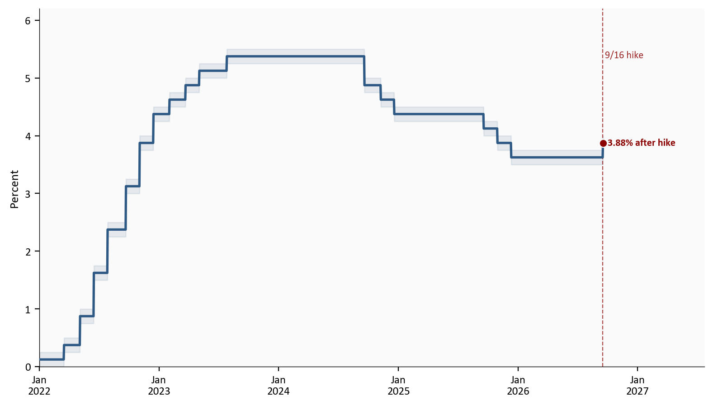
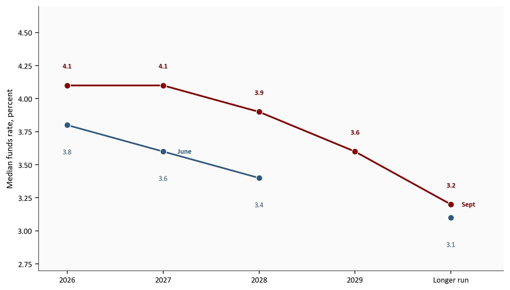
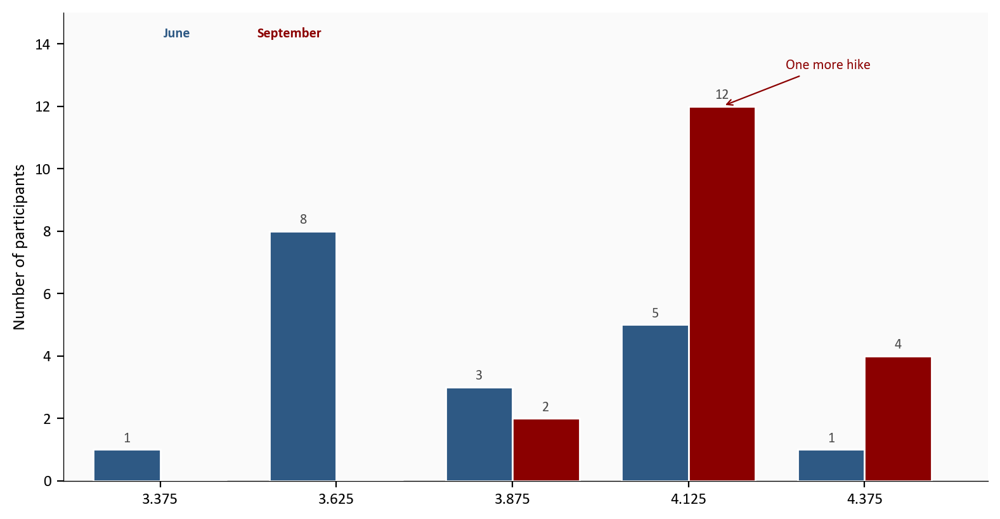
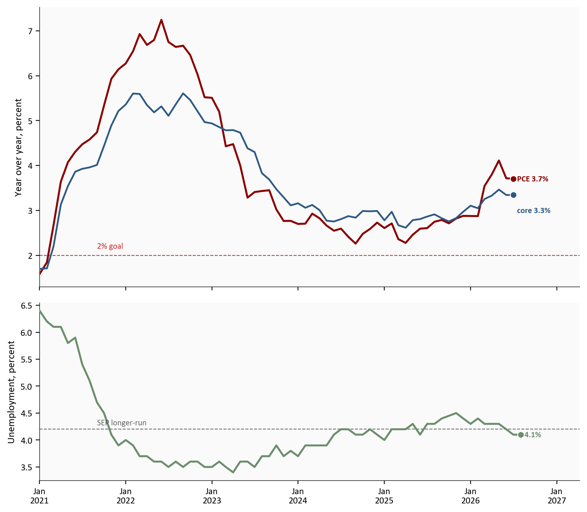
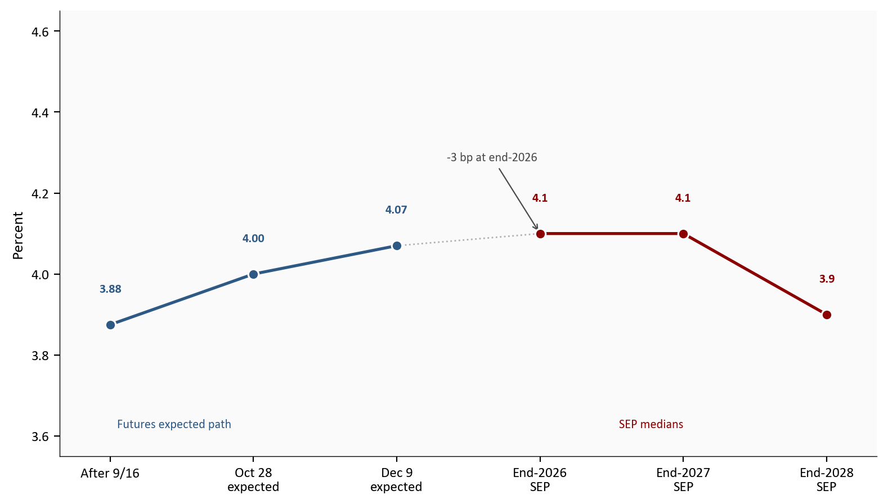

Median 2026 dot
4.1%
June SEP 3.8%
See one more 2026 hike
12
of 18 dots; 4 see two
2026 PCE inflation
3.7%
core PCE 3.4%
2026 unemployment
4.1%
longer-run 4.2%
SEP and statement as of 9/16 | FRED through August 2026
Yoram Gilboa
September 17, 2026
The Federal Open Market Committee raised the federal funds target range by 25 basis points to 3.75% to 4.00% on 9/16. The vote was 12-0. The median 2026 dot moved to 4.1% from 3.8% in June. 12 of 18 participants see one more hike in 2026.
The federal funds target range is the overnight rate band the Fed sets for banks. A basis point is one hundredth of a percentage point. The Summary of Economic Projections (SEP) is the quarterly set of participant forecasts released with four meetings a year. The dot plot is the SEP chart in which each participant places one anonymous mark at the funds-rate level they see as appropriate at year-end. The dual mandate is maximum employment and 2.0% inflation. The longer-run rate is each participant’s guess of where the funds rate settles once those goals are met and shocks have faded.
The complete pipeline is included with this post:
scripts/01_fetch_data.py downloads validated FRED series for CPI, PCE, unemployment, payrolls, the funds target range, the effective funds rate, and Treasury yields. It also writes transcribed SEP tables and a futures-implied path snapshot, with source URLs in data/raw/sources.json.scripts/02_clean_data.py calculates month-over-month and year-over-year percent changes. Those formulas live there. Charts only plot the finished columns.scripts/04_compute_stats.py writes every prose and metric-card value to stats/summary_stats.json.Run the scripts in numeric order from this post directory, then render index.qmd. pandas handles the tables and matplotlib draws the figures.
SEP medians and the 2026 dot counts are transcribed from the Federal Reserve’s September 16, 2026 projection materials and the June 17, 2026 projection materials. Eighteen participants submitted projections in both cycles. Chair Warsh did not submit a personal dot.
The funds-rate dots are midpoints of target ranges, rounded to the nearest one-eighth percentage point. A 4.12% dot is one 25 basis-point hike above the new 3.88% midpoint. SEP dots are midpoints of 1/8-point target ranges. This post writes 3.875% as 3.88% and 4.125% as 4.12% in running text; Table 1 medians stay at one decimal (4.1%).
CME FedWatch probabilities are implied by 30-day federal funds futures, not a poll of officials. CME does not publish a stable historical CSV, so the October and December odds in this post are a documented point-in-time snapshot compiled after the 9/16 decision. See data/raw/sources.json.
July PCE is the latest official personal-consumption inflation print. August CPI is already in. August PCE is scheduled for 9/30.
SEP and statement as of 9/16 | FRED through August 2026
The statement is short. The Committee said it raised the target range “in support of the Federal Reserve’s dual mandate,” that “economic activity is expanding at a solid pace,” that “domestic spending has been resilient,” and that “inflation remains elevated.” The operational sentence is that today’s action “will support a timelier return to the Committee’s 2.0 percent goal.”
The implementation note, effective 9/17, set interest on reserve balances at 3.90% and the primary credit rate at 4.00%. The daily effective funds rate was still 3.63% on 9/16, the last print before the new range took effect.
This is the first funds-rate increase of 2026, after five scheduled holds at 3.50% to 3.75%. The midpoint of that band was 3.625%.
# Target-range midpoint is the average of the published lower and upper bounds.
# Charts plot that finished column from scripts/02_clean_data.py.
path = rates_d.loc["2022-01-01":, ["target_mid", "dff"]].copy()
path = path.dropna(subset=["target_mid"])
fig, ax = plt.subplots(figsize=(8.0, 4.6))
ax.plot(path.index, path["target_mid"], color=COLORS["primary"], linewidth=1.9, zorder=3)
ax.fill_between(path.index, rates_d.loc[path.index, "dfedtarl"],
rates_d.loc[path.index, "dfedtaru"],
color=COLORS["primary"], alpha=0.10, zorder=1)
x_end = path.index[-1]
y_end = float(path["target_mid"].iloc[-1])
ax.scatter(x_end, y_end, s=40, color=COLORS["accent"], zorder=5,
edgecolors="white", linewidth=0.8)
ax.text(x_end, y_end, f" {y_end:.2f}% after hike",
color=COLORS["accent"], fontsize=8, fontweight="bold", va="center")
hike_day = pd.Timestamp("2026-09-16")
if hike_day in path.index:
ax.axvline(hike_day, color=COLORS["accent"], linewidth=0.8, linestyle="--", alpha=0.7)
ax.text(hike_day, 5.35, " 9/16 hike", color=COLORS["accent"], fontsize=8, alpha=0.85)
ax.set_ylabel("Percent")
ax.set_ylim(0, 6.2)
ax.xaxis.set_major_formatter(mdates.DateFormatter("%b\n%Y"))
ax.xaxis.set_major_locator(mdates.YearLocator())
span = path.index[-1] - path.index[0]
ax.set_xlim(path.index[0], path.index[-1] + span * 0.18)
plt.tight_layout()
fig.savefig(IMG_DIR / "september-2026-funds-path.png", dpi=150, bbox_inches="tight")
Source: Federal Reserve via FRED, DFEDTARL and DFEDTARU. The shaded band is the target range. The line is the midpoint.
A median is the middle projection when the 18 dots are lined up from low to high. It is a summary, not a Committee vote. The September median still says the funds rate ends 2026 at 4.1%, which is one hike above today’s midpoint, and stays there through 2027. The larger move is farther out. The 2027 median rose 50 basis points, to 4.1% from 3.6%. The 2028 median rose 50 basis points, to 3.9% from 3.4%.
June did not publish a 2029 column. September does, at 3.6%. The longer-run median, a rough stand-in for the neutral rate, rose 10 basis points to 3.2%.
# Official SEP Table 1 medians, transcribed in scripts/01_fetch_data.py.
order = ["2026", "2027", "2028", "2029", "Longer run"]
june = sep_medians[sep_medians["meeting"] == "June 2026"].set_index("horizon")["funds"]
sept = sep_medians[sep_medians["meeting"] == "September 2026"].set_index("horizon")["funds"]
x = np.arange(len(order))
june_y = [june.get(h, np.nan) for h in order]
sept_y = [sept.get(h, np.nan) for h in order]
fig, ax = plt.subplots(figsize=(8.0, 4.6))
ax.plot(x, june_y, color=COLORS["primary"], linewidth=1.8, marker="o",
markersize=7, markeredgecolor="white", markeredgewidth=0.8, zorder=3)
ax.plot(x, sept_y, color=COLORS["accent"], linewidth=1.9, marker="o",
markersize=7, markeredgecolor="white", markeredgewidth=0.8, zorder=4)
for i, (j_val, s_val) in enumerate(zip(june_y, sept_y)):
if pd.notna(j_val):
ax.text(i, j_val - 0.18, f"{j_val:.1f}", ha="center", va="top",
fontsize=8, color=COLORS["primary"])
if pd.notna(s_val):
ax.text(i, s_val + 0.12, f"{s_val:.1f}", ha="center", va="bottom",
fontsize=8, color=COLORS["accent"], fontweight="bold")
ax.set_xticks(x)
ax.set_xticklabels(order)
ax.set_ylabel("Median funds rate, percent")
ax.set_ylim(2.7, 4.7)
ax.set_xlim(-0.3, 4.55)
ax.text(4.08, sept_y[-1], " Sept", color=COLORS["accent"], fontsize=8,
fontweight="bold", va="center")
ax.text(1.12, june_y[1], " June", color=COLORS["primary"], fontsize=8,
fontweight="bold", va="center")
plt.tight_layout()
fig.savefig(IMG_DIR / "september-2026-median-dots.png", dpi=150, bbox_inches="tight")
Source: FOMC Summary of Economic Projections, Table 1, June 17 and September 16, 2026. June did not publish a 2029 median.
The 2026 median rose 30 basis points. That is the hike the Committee just delivered plus one more penciled in. The 2027 and 2028 revisions are the “higher for longer” part of the SEP. They say participants now expect restrictive policy to last past this year, not only that they wanted this week’s move.
Medians hide clusters. In September, 12 dots sit at 4.12%, the midpoint of a 4.00% to 4.25% range. That is the “one more hike” group. 4 dots sit at 4.38%. 2 remain at 3.88%, today’s midpoint. 16 of 18 therefore see at least one additional increase before year-end.
June’s 2026 distribution was lower and more spread out: 8 participants were still at the old 3.62% midpoint, and only 6 dots were at or above 4.12%. The September cluster at one more hike is new.
# Counts of anonymous SEP dots at each 1/8-point midpoint. Charts only plot
# these finished counts; the raw participant list is in sep_dots_2026.csv.
levels = [3.375, 3.625, 3.875, 4.125, 4.375]
june_vals = sep_dots.loc[sep_dots["meeting"] == "June 2026", "dot"]
sept_vals = sep_dots.loc[sep_dots["meeting"] == "September 2026", "dot"]
june_n = [(june_vals == level).sum() for level in levels]
sept_n = [(sept_vals == level).sum() for level in levels]
x = np.arange(len(levels))
width = 0.38
fig, ax = plt.subplots(figsize=(8.0, 4.2))
bars_j = ax.bar(x - width / 2, june_n, width, color=COLORS["primary"],
edgecolor="white", zorder=3)
bars_s = ax.bar(x + width / 2, sept_n, width, color=COLORS["accent"],
edgecolor="white", zorder=3)
for bar, val in zip(list(bars_j) + list(bars_s), june_n + sept_n):
if val == 0:
continue
ax.text(bar.get_x() + bar.get_width() / 2, val + 0.15, str(int(val)),
ha="center", va="bottom", fontsize=8, color=COLORS["neutral"])
ax.annotate(
"One more hike",
xy=(3 + width / 2, stats["dots_one_more"]),
xytext=(3.55, 13.2),
fontsize=8, color=COLORS["accent"],
arrowprops=dict(arrowstyle="->", color=COLORS["accent"], lw=0.8),
bbox=dict(facecolor="#fafafa", edgecolor="none", pad=2, alpha=0.9),
)
ax.set_xticks(x)
ax.set_xticklabels([f"{level:.3f}" for level in levels])
ax.set_ylabel("Number of participants")
ax.set_ylim(0, 15)
ax.set_xlim(-0.55, 4.7)
ax.text(0.02, 14.2, "June", color=COLORS["primary"], fontsize=8, fontweight="bold")
ax.text(0.55, 14.2, "September", color=COLORS["accent"], fontsize=8, fontweight="bold")
plt.tight_layout()
fig.savefig(IMG_DIR / "september-2026-dots-2026.png", dpi=150, bbox_inches="tight")
Source: FOMC SEP Figure 2, June 17 and September 16, 2026. Bars are participant counts at each 1/8-point midpoint of the year-end target range.
The distribution is the reason the 2026 median is 4.1% rather than 4.38%. The center of the Committee is one more hike, not two. The right tail is large enough that a second 2026 increase is a live minority view, not an outlier of one.
The SEP did not rewrite the economy. It nudged it. Median 2026 real GDP growth rose to 2.3% from 2.2%. Median 2026 unemployment fell to 4.1% from 4.3%, and it stays at 4.1% through 2028, 0.1 percentage point below the 4.2% longer-run median. Headline PCE inflation for 2026 rose to 3.7% from 3.6%. Core PCE, which excludes food and energy, rose to 3.4% from 3.3%.
Those are small revisions. They matter because they all point the same way: slightly firmer demand, slightly lower unemployment, slightly higher inflation, and a higher policy path. Realized data match the inflation side of that picture more than the “already back at 2 percent” side. July 2026 headline PCE was 3.7% year over year, 1.7 percentage points above the 2.0% goal. Core PCE was 3.3%. August 2026 CPI was 3.4% yearly and +0.4% on the month. Unemployment in August 2026 was 4.1%, 0.1 percentage point below the longer-run SEP median.
PCE is the Fed’s preferred inflation gauge. CPI is the more timely consumer index and the one households see in news coverage. Both are plotted or cited here. The dual-mandate chart uses PCE and unemployment, the two series that sit in the SEP table.
# Year-over-year rates are computed in 02_clean_data.py as
# (this month / the month 12 months earlier - 1) * 100.
start = "2021-01-01"
pce = infl.loc[start:, "headline_pce_yoy"].dropna()
core = infl.loc[start:, "core_pce_yoy"].dropna()
ur = labor.loc[start:, "unrate"].dropna()
fig, axes = plt.subplots(2, 1, figsize=(8.0, 7.0), sharex=True,
gridspec_kw={"height_ratios": [2.2, 1.4]})
axes[0].plot(pce.index, pce, color=COLORS["accent"], linewidth=1.9, zorder=3)
axes[0].plot(core.index, core, color=COLORS["primary"], linewidth=1.7, zorder=3)
axes[0].axhline(stats["fed_inflation_goal"], color=COLORS["fed_target"],
linestyle="--", linewidth=0.8, alpha=0.8)
axes[0].text(pce.index[8], stats["fed_inflation_goal"] + 0.15, "2% goal",
color=COLORS["fed_target"], fontsize=8, alpha=0.85)
axes[0].scatter(pce.index[-1], pce.iloc[-1], s=40, color=COLORS["accent"],
edgecolors="white", linewidth=0.8, zorder=5)
axes[0].scatter(core.index[-1], core.iloc[-1], s=40, color=COLORS["primary"],
edgecolors="white", linewidth=0.8, zorder=5)
axes[0].text(pce.index[-1], pce.iloc[-1], f" PCE {pce.iloc[-1]:.1f}%",
color=COLORS["accent"], fontsize=8, fontweight="bold", va="center")
axes[0].text(core.index[-1], core.iloc[-1] - 0.35, f" core {core.iloc[-1]:.1f}%",
color=COLORS["primary"], fontsize=8, fontweight="bold", va="center")
axes[0].set_ylabel("Year over year, percent")
span0 = pce.index[-1] - pce.index[0]
axes[0].set_xlim(pce.index[0], pce.index[-1] + span0 * 0.14)
axes[1].plot(ur.index, ur, color=COLORS["secondary"], linewidth=1.9, zorder=3)
axes[1].axhline(stats["sep_unrate_longer"], color=COLORS["neutral"],
linestyle="--", linewidth=0.8, alpha=0.8)
axes[1].text(ur.index[8], stats["sep_unrate_longer"] + 0.08, "SEP longer-run",
color=COLORS["neutral"], fontsize=8, alpha=0.85)
axes[1].scatter(ur.index[-1], ur.iloc[-1], s=40, color=COLORS["secondary"],
edgecolors="white", linewidth=0.8, zorder=5)
axes[1].text(ur.index[-1], ur.iloc[-1], f" {ur.iloc[-1]:.1f}%",
color=COLORS["secondary"], fontsize=8, fontweight="bold", va="center")
axes[1].set_ylabel("Unemployment, percent")
axes[1].xaxis.set_major_formatter(mdates.DateFormatter("%b\n%Y"))
axes[1].xaxis.set_major_locator(mdates.YearLocator())
plt.tight_layout()
fig.savefig(IMG_DIR / "september-2026-dual-mandate.png", dpi=150, bbox_inches="tight")
Source: BEA and BLS via FRED, PCEPI, PCEPILFE, and UNRATE. The 2 percent line is the FOMC’s longer-run inflation goal for PCE, not a CPI target. The unemployment reference is the September SEP longer-run median.
The gap that still needs work is inflation, not employment. That is the statement’s emphasis, and it is the SEP’s emphasis. It is also why a hike with unemployment at 4.1% is not a contradiction of the dual mandate. The employment side is close to the Committee’s own longer-run benchmark. The price side is not.
Futures markets had already placed a high probability on this week’s hike. After the decision they still do not treat the SEP as a promise of two more 2026 increases. A reconstruction of 30-day federal funds futures after 9/16 put the chance of another hike at the 10/27 to 10/28 meeting near 50%, and the chance of at least one more hike by the 12/8 to 12/9 meeting near 79%. That expected path ends 2026 around 4.07%, 3 basis points below the 4.1% median.
The 2-year Treasury yield was 4.74% on 9/16. The 10-year was 5.01%. Those levels sit above the new policy midpoint, which is the market’s way of writing “restrictive for a while” without matching every SEP year.
# Futures points are expected values: current midpoint plus hike probability
# times 0.25. SEP points are Table 1 medians. See sources.json.
labels = [
"After 9/16",
"Oct 28\nexpected",
"Dec 9\nexpected",
"End-2026\nSEP",
"End-2027\nSEP",
"End-2028\nSEP",
]
market_y = [stats["target_mid"], stats["market_oct_implied"], stats["market_implied_eoy2026"], np.nan, np.nan, np.nan]
sep_y = [np.nan, np.nan, np.nan, stats["sep_funds_2026"], stats["sep_funds_2027"], stats["sep_funds_2028"]]
x = np.arange(len(labels))
fig, ax = plt.subplots(figsize=(8.0, 4.6))
ax.plot(x[:3], market_y[:3], color=COLORS["primary"], linewidth=1.9,
marker="o", markersize=7, markeredgecolor="white", markeredgewidth=0.8, zorder=3)
ax.plot(x[3:], sep_y[3:], color=COLORS["accent"], linewidth=1.9,
marker="o", markersize=7, markeredgecolor="white", markeredgewidth=0.8, zorder=4)
ax.plot([2, 3], [market_y[2], sep_y[3]], color=COLORS["light"],
linewidth=1.0, linestyle=":", zorder=2)
for i, val in enumerate(market_y):
if pd.notna(val):
ax.scatter(i, val, s=40, color=COLORS["primary"], edgecolors="white",
linewidth=0.8, zorder=5)
ax.text(i, val + 0.08, f"{val:.2f}", ha="center", fontsize=8,
color=COLORS["primary"], fontweight="bold")
for i, val in enumerate(sep_y):
if pd.notna(val):
ax.scatter(i, val, s=40, color=COLORS["accent"], edgecolors="white",
linewidth=0.8, zorder=5)
ax.text(i, val + 0.08, f"{val:.1f}", ha="center", fontsize=8,
color=COLORS["accent"], fontweight="bold")
ax.annotate(
f"{fmt_int(stats['wedge_to_dots_bp'])} bp at end-2026",
xy=(3, stats["sep_funds_2026"]), xytext=(2.35, 4.28),
fontsize=8, color=COLORS["neutral"],
arrowprops=dict(arrowstyle="->", color=COLORS["neutral"], lw=0.8),
bbox=dict(facecolor="#fafafa", edgecolor="none", pad=2, alpha=0.9),
)
ax.set_xticks(x)
ax.set_xticklabels(labels)
ax.set_ylabel("Percent")
ax.set_ylim(3.55, 4.65)
ax.set_xlim(-0.35, 5.35)
ax.text(0.05, 3.62, "Futures expected path", color=COLORS["primary"], fontsize=8)
ax.text(3.55, 3.62, "SEP medians", color=COLORS["accent"], fontsize=8)
plt.tight_layout()
fig.savefig(IMG_DIR / "september-2026-markets-vs-sep.png", dpi=150, bbox_inches="tight")
Source: FOMC September 2026 SEP Table 1 and a snapshot of 30-day federal funds futures pricing taken after the 9/16 decision. October uses a 50 percent hike probability. December uses 79 percent for at least one more hike. Those are expected values, not mode outcomes.
Read the chart as two claims, not one. Near-term pricing and the 2026 median now tell a similar story: this hike, then probably one more by December, with October as a coin flip. The SEP’s 2027 and 2028 medians are the part markets have not fully written into a year-end 2026 contract. Higher for longer is a 2027-2028 statement more than a December statement.
The 9/16 meeting did two things that should not be collapsed into one headline. It raised the target range by 25 basis points, unanimously. It also shifted the median path up, with 12 of 18 dots at one more 2026 hike and with 2027-2028 medians 50 basis points higher than in June.
The forecast revisions that accompany those dots are modest: 0.1 percentage point on 2026 growth, 0.1 on PCE, and 0.2 percentage point lower on unemployment. The policy path moved more than the growth path. That is a credibility choice. Participants are saying that returning inflation to 2.0% on a timely basis, with demand still resilient, requires a higher funds rate for longer, not a larger rewrite of real activity.
The dual-mandate arithmetic is the same story in realized data. Inflation is still the gap. Unemployment is not. Markets agree about 2026 and are less tightly bound to the new 2027-2028 dots. The next tests are incoming PCE and the 10/27 to 10/28 meeting, which has no SEP.
For the Fed: The 12-0 vote closed the dissent that showed up in July. The SEP did not close the debate about a second 2026 hike. Twelve dots at one more increase make December the modal additional meeting. October is live if the next inflation prints stay firm, and it is skippable if they do not. The longer-run median at 3.2% is a small signal that participants see less need to return to the pre-2022 low-rate era.
For households: The overnight rate is now 3.75% to 4.00%. Borrowing costs that track the funds rate, including many credit cards and adjustable loans, move with that range. The SEP’s inflation path still has PCE at 3.7% this year, so the Committee is not telling households that the 2.0% goal is already in hand.
For investors: The 2026 median and futures now sit within a few basis points. The new information is the 2027-2028 path and the 10 basis-point longer-run uptick. Duration-sensitive assets care about that “higher for longer” tail more than about whether the extra 2026 hike lands in October or December.
For insurers and other long-duration balance sheets: A higher path for 2027 and 2028 raises the discount rates that mark long-tailed liabilities. It does not, by itself, tell you claims inflation has peaked. July 2026 headline PCE is still 3.7%, so replacement-cost and severity pressure can stay elevated even while the funds rate is moving up.
The dot plot is a set of conditional projections, not a policy commitment. Participants change their dots when the data change. Historical SEP errors are wide, which is why this post treats the median as a central case and the distribution as the more informative object.
Eighteen dots are not nineteen. The Chair did not submit a projection. The 12-0 vote includes only the twelve voting members, a different group from the nineteen participants who may submit dots.
Futures odds are a snapshot. They move with every CPI, payroll, and Fed-speak print. The 50% and 79% figures should be read as the post-meeting starting point, not as a live FedWatch feed.
PCE lags CPI by a month in this vintage. Dual-mandate inflation in the charts is therefore July 2026, while the consumer CPI discussion uses August 2026.
| Series | Description | Source |
|---|---|---|
| FOMC statement and implementation note | Vote, target range, IORB | Federal Reserve, 9/16/2026 |
| SEP Table 1 and Figure 2 | Medians and 2026 dots | September 2026 projections |
| June SEP Table 1 | Prior medians and 2026 dots | June 2026 projections |
| DFEDTARL, DFEDTARU | Funds target range | FRED |
| DFF, FEDFUNDS | Effective funds rate | FRED |
| PCEPI, PCEPILFE | Headline and core PCE inflation | FRED |
| CPIAUCSL, CPILFESL | Headline and core CPI | FRED |
| UNRATE, PAYEMS | Unemployment and payrolls | FRED |
| DGS2, DGS10 | 2-year and 10-year Treasury yields | FRED |
| FOMC calendar | Next meeting dates | Federal Reserve |
pandas retrieves and transforms the FRED series with fredapi. matplotlib draws each figure. Official SEP prints and the futures snapshot are marked # MANUAL: in scripts/04_compute_stats.py because they are not FRED series.
Data current as of 9/17/2026. FOMC statement and SEP released 9/16/2026. CPI through August 2026; PCE through July 2026; unemployment through August 2026. Daily effective funds rate last printed 9/16.